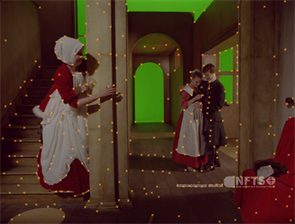
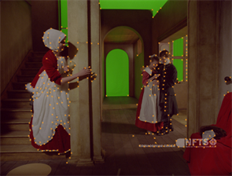
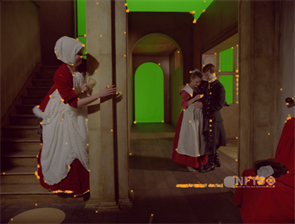

在 序列 模式下，CameraTracker 跟踪连接到 源 输入并定义一组与场景中的固定点相对应的 2D 特征轨迹。
注意: 如果您打算使用单独的镜头失真节点手动删除镜头失真，则应该在跟踪序列之前执行此操作。请参阅 处理镜头失真 。否则，设置 镜头失真 到 未知镜头 在您解决相机位置之前，强制 CameraTracker 计算失真。
在跟踪之前，请使用 CameraTracker 的 “属性” 面板来控制查看器输出并确定跟踪行为:
| 1。 | 在 摄影师 选项卡，确保 源 设置为 序列 . |
| 2. | 如果您打算遮罩图像的部分，请设置 面具 控制到遮罩源。 |
例如，如果你正在使用的 alpha 通道的滚塑点贴 面具 输入，选择 面具阿尔法 。有关更多信息，请参见 屏蔽图像的区域 .
注意: 对于立体或多视图镜头，设置 主要观点 在 摄影师 或 设置 标签到主跟踪视图。任何遮罩都应该应用于此视图，然后用于计算次摄影机。
| 3. | 使用 范围 下拉列表以确定分析哪些帧: |
• 输入 -默认值，将帧范围设置为附加到 源 输入。
• 全球 -将跟踪帧范围设置为项目设置中设置的范围 帧范围 控制。
如果没有定义帧范围，您读取的第一个图像的帧范围将用作 全球 帧范围。
• 自定义 -设置由描述的帧的跟踪范围 从 和 到 字段。
| 4. | 在 设置 选项卡上，定义特征跟踪的起点: |
• 数量 的 特点 -定义要在每一帧中跟踪的特征数。
理想情况下，每帧应该使用 100 多条轨道。在大多数情况下，默认 150 应该足够了，但是在困难的序列中，您可以考虑使用更高的数字。
• 检测 阈值 -在输入图像上设置特征的分布。
如果输入低检测阈值，将在图像的所有部分均匀跟踪特征，反之亦然。
|
 |
 |
| 低阈值分布 | 高阈值分布 |
• 特征 分离 -设置彼此之间特征的分布。
要强制特征分离并以偶数距离在图像上均匀分布特征，请输入高特征分离值。
|  |
|
| 低分离值 | 高分离值 |
| 5. | 检查 细化特征位置 将检测到的特征锁定到局部角。如果你激活它，CameraTracker 会在你的镜头中找到最近的角点，并将特征锁定到它。 |
| 6. | 检查 预览 特点 查看跟踪功能的当前分布。 |
当您想在跟踪之前进一步调整跟踪参数时，预览会派上用场 -- 当调整控件时，它会动态更新。
在使用分布和分离控件进行跟踪之前，确保预览的特征均匀分布，而不是聚集在一起，这一点很重要。
|
|
| 预览序列中的特征 |
| 7. | 一旦您对预览中的功能分布感到满意，请单击 轨道 开始分析序列。 |
| 8。 | CameraTracker 开始按顺序读取帧并跟踪当前的特征。不符合中设置的质量阈值的跟踪 设置 标签 跟踪 控件被重新设定，以便轨道的数量保持不变。 |
请参阅 故障排除序列轨道 有关调整这些控件的更多详细信息。
当播放头到达序列的结尾时，它通过依次向后读取帧来开始验证过程。由于错误而重新设定的任何轨迹都将被追溯到创建它们的地方，如果它们仍然可行的话。
|
|